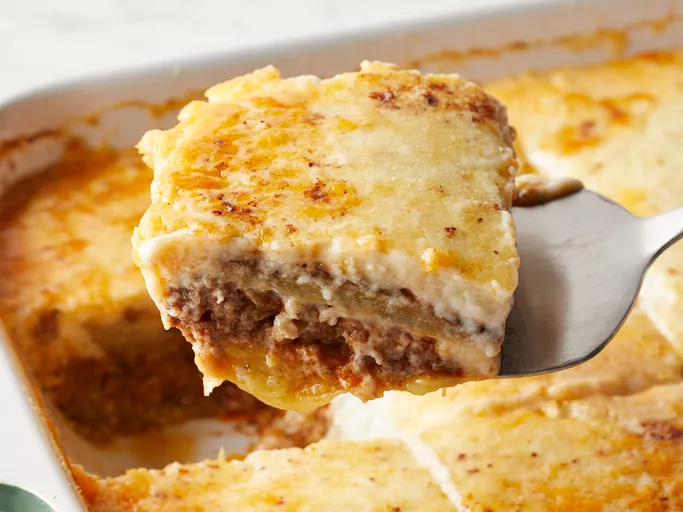

Moussaka

Description
This moussaka tastes great! Layers of sliced eggplant are baked in a
ground beef sauce and smothered in a creamy white béchamel sauce in this
classic Greek dish.
Ingredients
- salt
- 3 eggplants
- 1/4 cup of olive oil
- 1 tablesoon butter
- 1 pound lean ground beef
- 2 onions, chopped
- 1 clove garlic
- ground black pepper to taste
- 2 tablespoons dried parsley
- 1/2 teaspoon fines herbs
- 1/4 teaspoon ground cinnamon
- 1/2 teaspoon ground nutmeg
- 1 can tomato sauce
- 1/2 cup red wine
- 1 Egg
- 4 cups milk
- 1/2 cup butter
- 6 tablespoons all-purpose flour
- ground white pepper
- 1 1/2 cups grated parmesan cheese
Steps
- Combine ingredients.
- Follow the recipe.
- Cook the things.
- Eat the things.
- Wash the dishes.